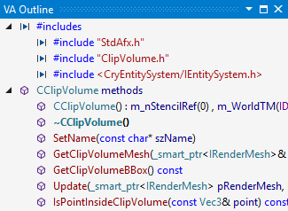
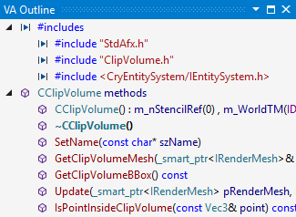

VA Outline
The VA Outline summarizes the active document. Click within the tool window to navigate the document, and drag-n-drop to reorder its content. VA Outline stays up to date as you edit.

Learn more.
The VA Outline summarizes the active document. Click within the tool window to navigate the document, and drag-n-drop to reorder its content. VA Outline stays up to date as you edit.

Learn more.